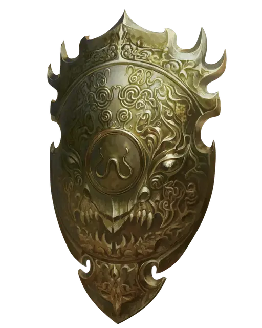

Щит скрытого лорда
Shield of the Hidden Lord
Доспех (щит), легендарный (требуется настройка)

Рекомендованная стоимость от 50 001 зм
Щит скрытого лорда имеет небесное происхождение и служит тюрьмой для исчадия преисподней [pit fiend] Горгота, чьи смертные последователи почитают его как бога. Со временем зло Горгота исказило внешний вид щита и теперь его небесные мотивы и узоры превратились в дьявольское лицо, которое неуловимо зловеще двигается.
Держа этот щит, вы получаете бонус +2 к КД и сопротивление урону огнём.
Разум. Щит Спрятанного Владыки разумен, пока в нём заключен Горгот. Будучи разумным, щит обладает следующими свойствами:
- Щит обладает следующими характеристиками: Интеллект 22, Мудрость 18 и Харизма 24, а также слухом и истинным зрением на расстоянии 120 футов.
- Щит может говорить, читать и понимать Общий и Инфернальный, а также может телепатически общаться с любым существом, которое он может почувствовать в пределах 120 футов от него. Он обладает глубоким голосом с легкой хрипотцой.
- Щит имеет 3 заряда. Действием вы можете израсходовать 1 заряд, чтобы наложить огненный шар [fireball] или 2 заряда, чтобы сотворить огненная стена [wall of fire] с помощью щита (Сл спасброска 21 для каждого заклинания). Заклинание огненная стена длится 1 минуту (и не требует концентрации). Щит восстанавливает все израсходованные заряды ежедневно на рассвете.
- В любое время вашего хода щит может начать излучать ауру страха в течение 1 минуты. (Это сила щита, которой вы не управляете.) Любое враждебное вам существо, которое начинает свой ход в пределах 20 футов от щита, должно совершить спасбросок Мудрости Сл 18. При провале существо становится испуганным до начала своего следующего хода. При успехе существо невосприимчиво к этой силе щита в течение следующих 24 часов. Как только щит использует это свойство, он не сможет использовать его снова до следующего рассвета.
Личность Горгота. Горгот отчаянно жаждет свободы, но не может освободиться самостоятельно. Исчадие преисподней не раскрывает свою истинную природу, называя себя только Скрытым Лордом. Он намекает и даёт подсказки о том, что он ангел, заключенный в дьявольскую тюрьму. Вырвавшись из щита, исчадие преисподней соблюдает условия любой сделки, которую он заключил для своего побега.
Будучи заключенным в щите, Горгот осторожно направляет нынешнего владельца щита к совершению актов жестокости и подчинения, надеясь обречь его душу на отправку в Девять Преисподних. Конфликт возникает, если владелец щита делает что-то, что может затруднить Горготу побег из его тюрьмы, например, оставляет щит там, где другие вряд ли найдут его.
Горгот не знает, как сбежать из щита. Исчадие преисподней верит (ошибочно), что он может освободиться из щита, если его приведут в Девять Преисподний, так как он убежден, что сила щита там ослабнет.
Освобождение Горгота. Наложение на щит заклинания рассеивание зла и добра [dispel evil and good] имеет 1-процентный шанс освободить исчадие преисподней или автоматически преуспевает, если заклинание накладывается соларом [solar], планетаром [planetar] или архидьяволом.
Бог может освободить исчадие преисподней, прикоснувшись к щиту и произнеся имя Горгота. После освобождения Горгот появляется в случайном, ближайшем к щиту свободном пространстве.